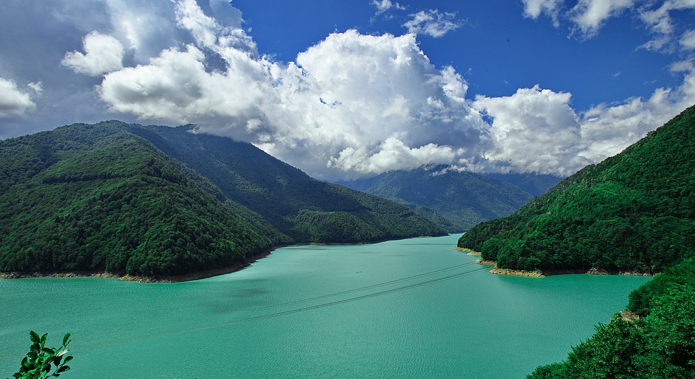

მოგესალმებით სამეგრელოს საიტზე! აქ თქვენ იპოვით ინფორმაციას ჩვენი რეგიონის შესახებ.
სამეგრელო (მეგრ. სამარგალო) — დასავლეთ საქართველოს ისტორიულ-გეოგრაფიული მხარე. ეს არის მდინარე რიონს, ცხენისწყალს, ენგურსა და შავ ზღვას შორის მოქცეული ტერიტორია. სახელწოდება მომდინარეობს ისტორიული მხარის ეგრისის სახელიდან. ქართულ წერილობით წყაროებში იხსენიება XII საუკუნიდან. თავდაპირველად გაიგივებული იყო მთლიანად დასავლეთ საქართველოსთან (მსგავსად აფხაზეთისა, იმერეთისა), XIII-XV საუკუნეებში უკვე ვიწრო მნიშვნელობა აქვს — აღნიშნავს ქართველების ეთნოგრაფიული ჯგუფით — მეგრელებით — დასახლებულ მხარეს მდინარეებს ფსირცხასა (ძვ. ანაკოდიისწყალი) და ცხენისწყალს შორის. ცენტრალური ქალაქია ზუგდიდი.ანტიკურ ხანაში სამეგრელო კოლხეთის სამეფოს ნაწილს წარმოადგენდა. კოლხეთი მთლიანად მოიცავდა დღევანდელი დასავლეთ საქართველოს ტერიტორიას. თანამედროვე ეპოქამდე ამ რეგიონს ლაზიკის და ეგრისის სახელწოდებებითაც იცნობდნენ, მისი პოლიტიკური ცენტრი არქეოპოლისი (ან ნოქალაქევი) იყო. სწორედ ნოქალაქევს უკავშირდება არგონავტებისა და ოქროს საწმისის მითი. რომაელებმა ეს მხარე ჩვენს წელთაღრიცხვამდე პირველ საუკუნეში დაიპყრეს და აქ თითქმის 400 წლის განმავლობაში ბატონობდნენ. XI საუკუნეში დასავლეთ და აღმოსავლეთ საქართველო ერთ სამეფოდ გაერთიანდა, რომელმაც XV საუკუნემდე იარსება. XV საუკუნის დასასრულს საქართველო სამ მოქიშპე, დამოუკიდებელ სახელმწიფოდ დაიყო: ქართლი, კახეთი და იმერეთი. შეიქმნა რამოდენიმე სამთავრო, რომელთაგან ერთ-ერთი იყო ოდიში. იგი დღევანდელი სამეგრელოს მთელს ტერიტორიას მოიცავდა. XII საუკუნის შუა წლებიდან მოყოლებული XIX საუკუნემდე ოდიშს დადიანების გვარის წარმომადგენლები მართავდნენ. 1803 წელს ოდიში რუსეთის პროტექტორატად გამოცხადდა. ამ დროისთვის აღმოსავლეთ საქართველო უკვე რუსეთის მმართველობის ქვეშ იყო. 1918 წელს საქართველომ დამოუკიდებლობა გამოაცხადა და სამეგრელო ახალი დემოკრატიული ქვეყნის ნაწილი გახდა. დღეს ისტორიული სამეგრელოს სამთავროს ტერიტორია სამეგრელო–ზემო სვანეთის ადმინისტრაციული რეგიონის შემადგენლობაში შედის.
სამეგრელო თავისი ისტორიული წარსულით და ადათ-წესებით ძალიან საინტერესო მხარეა. ამ მხარის ყოფა-ცხოვრებით დაინტერესება წარსულში დიდი იყო. ბერძენი მწერლები კოლხებს ბიბლიური ნოეს შვილის - იაფეტის შთამომავლებად თვლიდნენ, ჰეროდოტე კი მათ ეგვიპტური წარმოშობის ხალხად მიიჩნევდა. ნიკოლოზ დამასკელი წერდა, რომ კოლხები მიცვალებულს მიწაში არ მარხავენ, არამედ ტყავში შეახვევდნენ და ხეზე ჩამოკიდებდნენ. ჰეროდეტეს ცნობით კოლხებს ჩვეულებად ჰქონდათ წინდაცვეთა. ასეთ ზნე-ჩვეულებებზე დიდ გავლენას ახდენდნენ მეზობელი კულტურები. გარედან შემოსული რელიგიურ კულტურებთან ერთად კოლხეთში გავრცელებული ყოფილა ხეთა თაყვანისცემა და სხვა, რომელთა ნაწილი სახეცვლილი ფორმით დღემდე გვხვდება სამეგრელოში, უმეტესად მაღალმთიან სოფლებში. ერთ-ერთი ასეთი ტრადიციაა „ყვავის წილი“, რომლის დროსაც კვერცხის ნაჭუჭს აავსებენ ღომით და ყველით, სახურავზე ააგდებენ და თან იტყვიან - ყვავის წილი, ამის შემდეგ ყვავი წიწილას არ წაიღებსო. საქართველოს ყველა კუთხში დიდი მნიშვნელობა ენიჭებოდა დატირების რიტუალს, ამ მხრივ ცნობილი ტრადიციაა მეგრული „ზარი“ - სარიტუალო სიმღერა მიცვალებულთა დატირებისთვის. სამეგრელო მდიდარი ფოლკლორითაც გამოირჩევა. ყველაზე ცნობილი მეგრული ხალხური სიმღერაა „მეგრული ნანა“ - იავნანა, რომლის ერთ–ერთი ჰანგი რუსმა კომპოზიტორმა, პეტრე ჩაიკოვსკიმ თავის ცნობილ საშობაო ბალეტში - „მაკნატუნა“ - გამოიყენა. ეს მშვენიერი პატარა ლექსი კი ალბათ ბევრს გსმენიათ: მზე დედაა ჩემი, მთვარე მამაჩემი, წვრილ-წვრილი ვარსკვლავები და და ძმაა ჩემი. ბევრ მოგზაურს აღუნიშნავს მეგრელთა აღნაგობა და სილამაზე. ასევე აღსანიშნავია მათი დახვეწილი სამოსი. გრძელი ჩოხა პირველად მეგრელებს ჩაუცვამთ. მეგრელი ქალის აბრეშუმის, ნატიფად მოსირმული კაბის ნახვა კი საქართველოს ეროვნულ მუზეუმში შეგიძლიათ. შეუძლებელია ვისაუბროთ სამეგრელოზე და სამზარეულო არ აღვნიშნოთ. ტრადიციული მეგრული საკვები ცხარე და უხვი საკაზმით გამოირჩევა. ამის მიზეზი ის გახლავთ, რომ ძველად რბილი, სუბტროპიკული ჰავიდან გამომდინარე. მალარია უდიდეს საფრთხეს წარმოადგენდა სამეგრელოსათვის და ამ რეგიონის მცხოვრებლებმა თავიდანვე აღმოაჩინეს, რომ დიდი რაოდენობით წიწაკის მოხმარება საშინელი დაავადების განვითარებას გარკვეულწილად აფერხებდა. საბოლოოდ, ცხარე სანელებლები მეგრული სამზარეულოს ტრადიციულ ატრიბუტად იქცა. ცნობილია მეგრული სულგუნი, აჯიკა, საცივი, თუმცა მოწინავე პოზიციებზე მაინც ელარჯი გახლავთ, რომელიც ღომისა და სულგუნისგან მზადდება და გულგრილს არავის ტოვებს. აუცილებლად უნდა ვახსენოთ ღვინოც. საქართველოში 500–ზე მეტი ვაზის ჯიში ხარობს, ხოლო 60 მათგანი სამეგრელოში იზრდება. მათგან ყველაზე ცნობილია ოჯალეშის ჯიშის ყურძენი, რომლისგანაც საუკეთესო ღვინო მზადდება; ეს არის ნახევრად ტკბილი წითელი ღვინო, რომელსაც ველური ვარდის სუსტი სურნელი და ხასხასა წითელი ფერი ახასიათებს.
სამეგრელოში მოგზაურობის მრავალი მიზეზი არსებობს. დასავლეთ საქართველოს ეს ნაწილი სტრატეგიული მნიშვნელობის, ზღვისპირა სანაპიროებით, გამორჩეული სამზარეულოთი, უძველესი ნაქალაქევით გამოირჩევა. სამეგრელო დღემდე უძველესი, ისტორიული მხარის სტატუსს ატარებს. ამ რეგიონში მოხვედრისას აუცილებლად შეამჩნევთ ადგილობრივების საგულდაგულოდ მოწესრიგებულ კარ-მიდამოს, შეიგრძნობთ დასავლეთისთვის დამახასიათებელ ნოტიო ჰავას და დატკბებით მისი მდიდარი ბუნებით. არ გაუშვათ შანსი აქაური სტუმარ-მასპინძლობის კულტი საკუთარ თავზე გამოსცადოთ და მეგრული ოჯახების მიერ უძველესი კერძები, თანამედროვე ელემენტებით როგორებიცაა ელარჯი, ღომი, გებჟალია და ხარჩო, განთქმული ცხარე აჯიკა შემწვარ ხორცთან, დააგემოვნოთ. სამეგრელო როგორც კულტურული და, ბუნებრივი ძეგლებით და სხვადასხვა ღირსშესანიშნაობით ასევე მრავალფეროვანი ბუნებითაც დატვირთული მხარეა - კოლხეთის დაბლობი, პალიასტომის ტბა, რომ აღარაფერი ვთქვათ ტობავარჩხილის ტბაზე, რომელსაც პირველი უნდა ეწვიოთ სამეგრელოში მოხვედრისას. ამიტომაც, ვიზიტისთვის კონკრეტული ადგილების შერჩევა არც ისე მარტივია.თუმცა, შევეცდები ის ამ სტატიაში ის 10 ადგილი გამოვყო, რომელიც სამეგრელოში აუცილებლად უნდა ნახოთ.